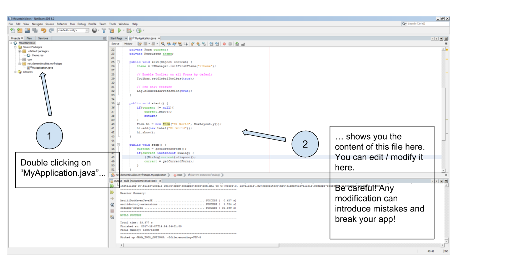
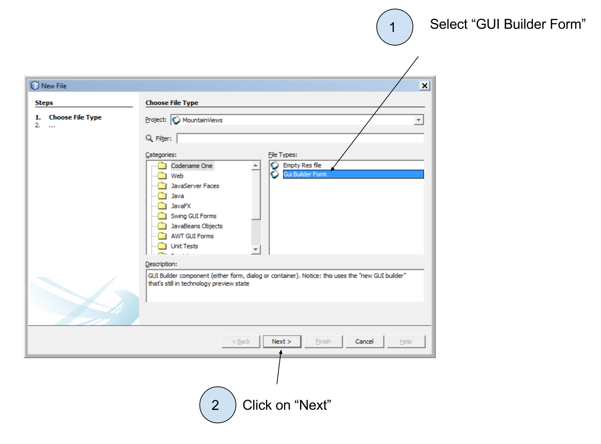
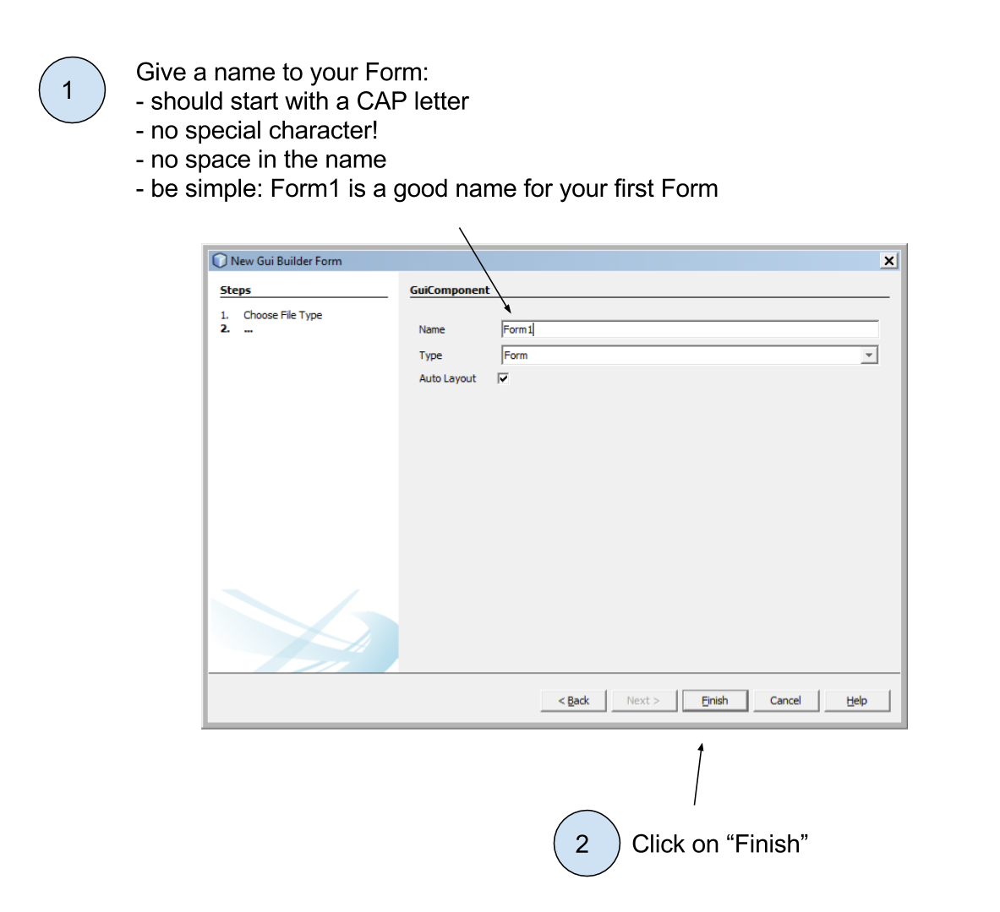
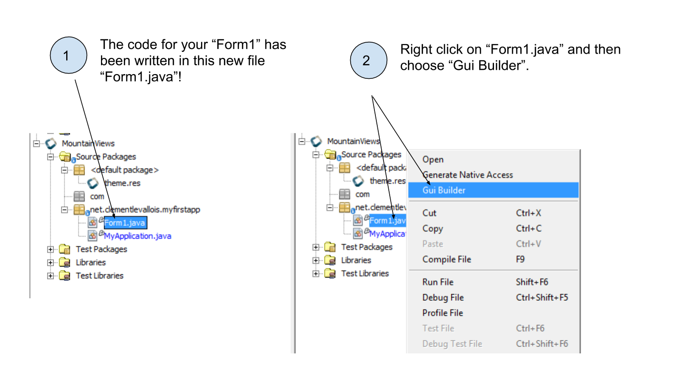
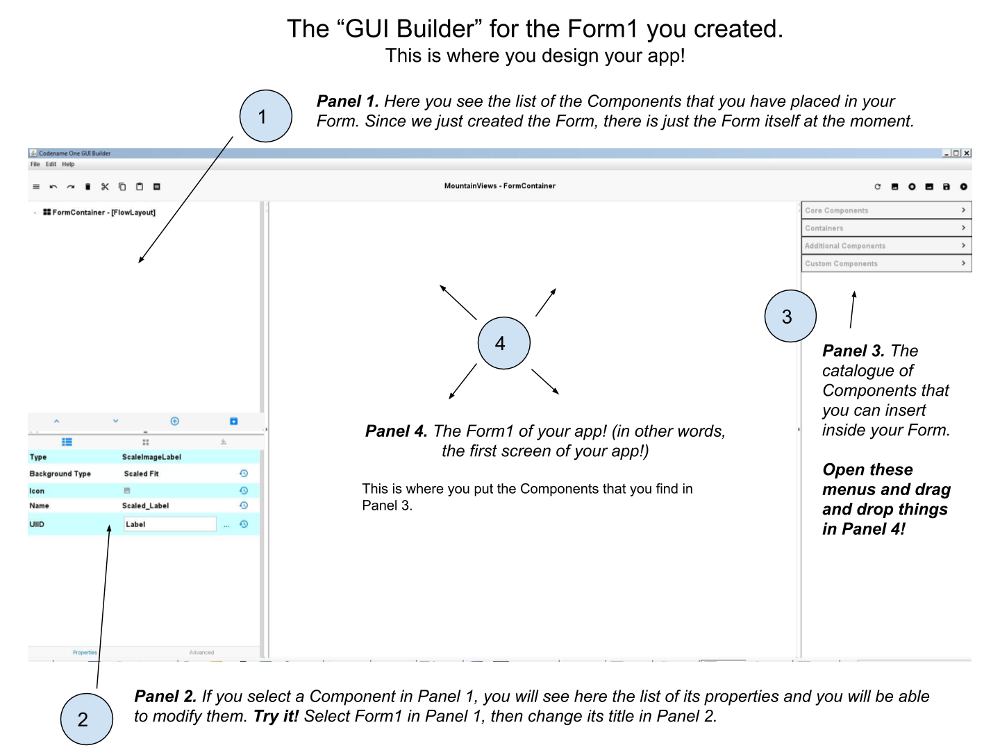

public void start() {
if(current != null){
current.show();
return;
}
Form hi = new Form("Hi World", BoxLayout.y()); (1)
hi.add(new Label("Hi World")); (2)
hi.show(); (3)
}CODAPPS
Creating a Form with two different approaches
last modified: 2018-03-03
'Escape' or 'o' to see all sides, F11 for full screen, 's' for speaker notes
1. Creating a Form and a Label by writing some code (DYI approach)
Not sure what a Form is? Have a look at the previous lesson!
Ok so if we are supposed to create our app by writing some code, where should this code be written?
NetBeans is a software with many functionalities, including text editing: you can write code directly into the files of your app, in NetBeans. These files are visible here:

Figure 1. The files of your app visible in NetBeans
Double click on the file MyApplication.java to display its content in the right panel in NetBeans:

Figure 2. Opening the content of MyApplication.java for editing
When we created the project in the previous lesson, a Form was added to this new app by default, with a Label saying "Hi World" in it.
How was this Form and this Label added to the app?
Simply with 3 lines of code included in the file MyApplication.java:
| we will now show some lines of code but you are not supposed to understand them at this stage. It is simply to illustrate that Forms can be created with code. |
(scroll down a bit in NetBeans, as these lines are in the middle of the file):
MyApplication.java
This line creates the screen with a title "Hi World".
This line adds a Label saying ("Hi World") in the Form!
The Form was created but was invisible. With this line, the Form appears on the screen of the phone. So you see it when the app launches!
So this is how you add a Form by writing some code in a file. But in this course, we will first use almost no coding at all. We will use instead a simpler approach:
2. Another possibility: creating a form without coding - with the GUI
In the previous lesson we had called this method the "Ikea approach": we just assemble pre-existing blocks, without designing the whole furniture ourself.
Let’s see how it works:

Figure 3. Creating a Form with the GUI - first step

Figure 4. Creating a Form with the GUI - second step

Figure 5. Creating a Form with the GUI - third step
Clicking on 'Finish' did not show you any 'Form', so what happened? Where do I find my 'Form' and how do I use it?
A file with the same name as your Form as been created, ending with ".java"
So if you named your Form Form1, you should see a new file called Form1.java. Open it in this following manner:

Figure 6. Opening the Form we created to work on it
The window which opens now is called the "GUI Builder". This window shows a preview of the Form you just created.
It provides simple tools to add text, picture, buttons… to the Form, without coding!
Let’s examine the GUI Builder in detail:

Figure 7. Discovering the GUI Builder

Figure 8. Save before you quit!
And… that’s almost it! Whatever you create with the GUI Builder will be included in your app.
Except that if you preview your app (clicking the usual big green arrow icon  in NetBeans) to admire your work, you don’t see your screen but another one that says "Hi World". Why?
in NetBeans) to admire your work, you don’t see your screen but another one that says "Hi World". Why?
Even if you can create a Form with the GUI Builder, so without coding, you still need a couple of lines of code to trigger the opening of the Form when the app launches.
Where should these lines of code be written? As we have seen just above, it happens in the file 'MyApplication.java'. Here is how it looks by default:
MyApplication.java
public void start() {
if(current != null){
current.show();
return;
}
Form hi = new Form("Hi World", BoxLayout.y());
hi.add(new Label("Hi World"));
hi.show();
}As you see, at no point is Form1 (the Form we created with the GUI builder) mentioned. No wonder it is not used in our app!
We just need to replace the Form currently mentioned in the code, by our Form called 'Form1'.
So, replace this 3 lines:
Form hi = new Form("Hi World", BoxLayout.y());
hi.add(new Label("Hi World"));
hi.show();with these 2 lines:
Form1 myForm1 = new Form1();
myForm1.show();Now, launching the app preview will show our Form1! It still empty but it is a good start! 🎉🎉

Figure 9. Previewing the Form you created!
The end
Questions? Want to open a discussion on this lesson? Visit the forum here (need a free Github account).
Find references for this lesson, and other lessons, here.
Licence: Creative Commons, Attribution 4.0 International (CC BY 4.0). You are free to:
copy and redistribute the material in any medium or format
Adapt — remix, transform, and build upon the material
⇒ for any purpose, even commercially.
 This course is designed by Clement Levallois.
This course is designed by Clement Levallois.
Discover my other courses in data / tech for business: http://www.clementlevallois.net
Or get in touch via Twitter: @seinecle